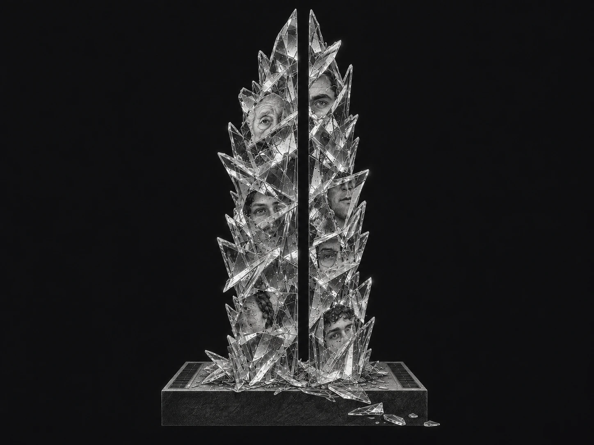
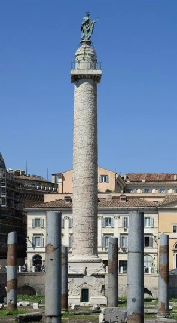
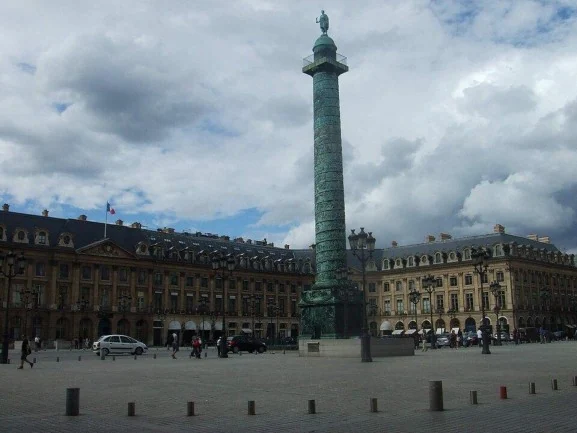
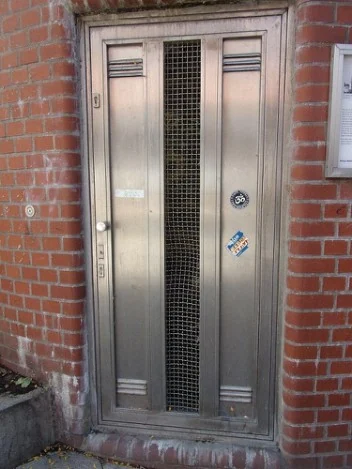
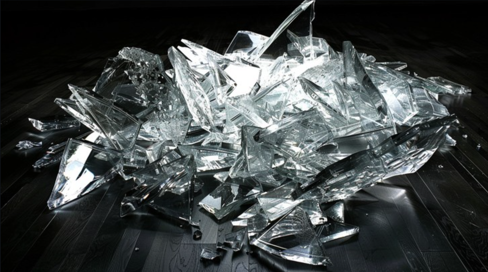
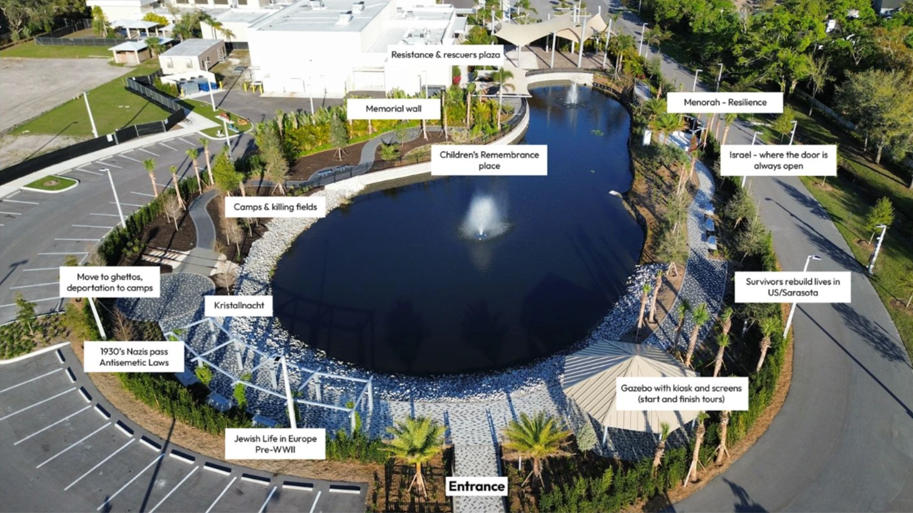
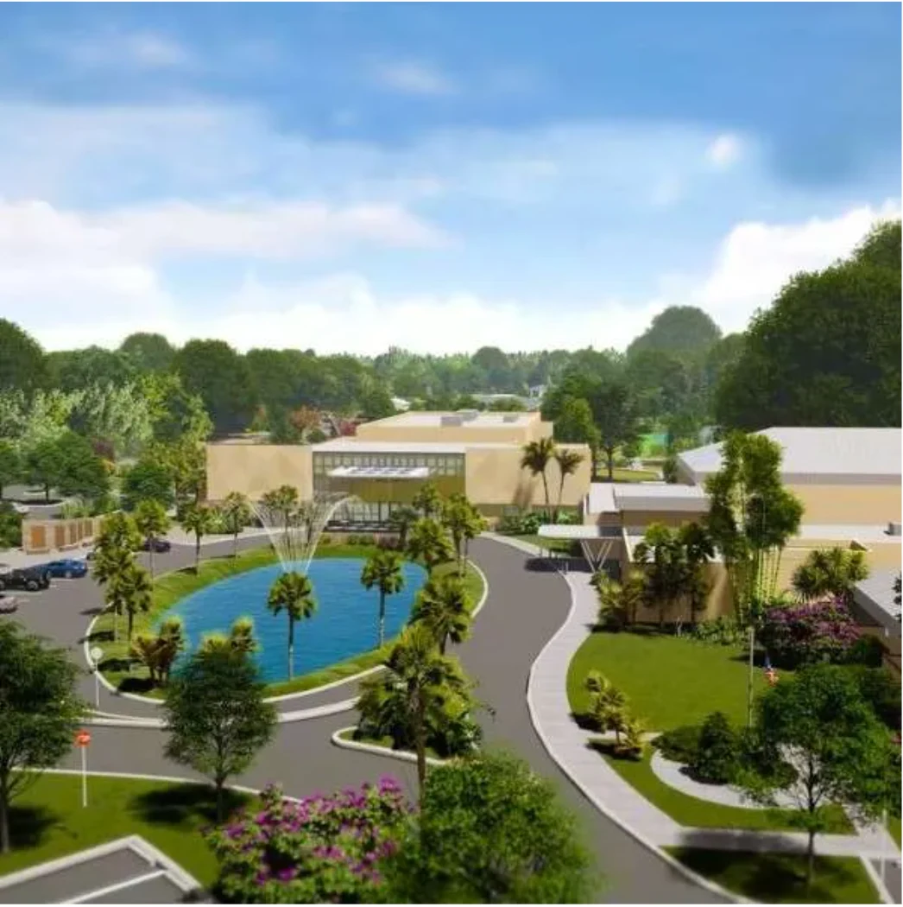
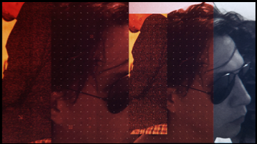
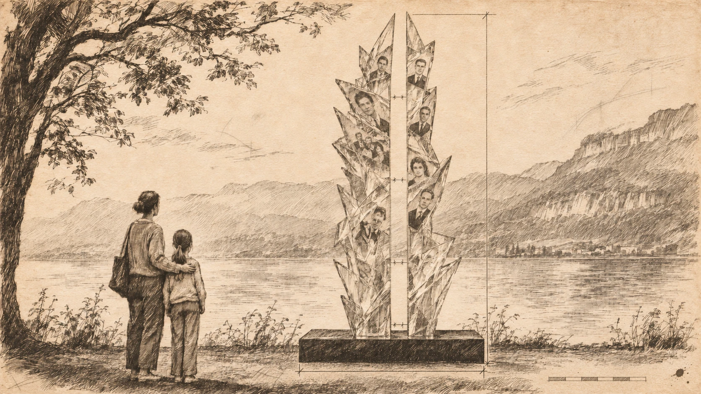

HIER IST KEIN WARUM
Aquí no hay por qué
En “Si esto es un hombre”, Primo Levi relata un episodio ocurrido durante su cautiverio en Auschwitz. Atormentado por la sed, intenta tomar un carámbano que cuelga de una ventana. Un guardia se lo arrebata. Cuando Levi pregunta por qué, recibe una respuesta: «Hier ist kein Warum» («Aquí no hay por qué»).
La frase condensa la lógica de un sistema que no solo priva de libertad, sino que niega incluso el derecho a preguntar y con ella, del reconocimiento del otro como sujeto.
Referencia: Primo Levi, Si esto es un hombre (Se questo è un uomo, 1947), capítulo «En el fondo».

Sinópsis:
«El mar no existe sin la gota. Pero ninguna gota, por sí sola, alcanza a ser el mar».
El proyecto consiste en una columna de cristales rotos que representan la humanidad: fragmentada, múltiple, aparentemente caótica.
Cada fragmento de la pieza contiene una memoria individual, una ausencia. La suma de ellas produce una estructura que no podría sostenerse por separado. La obra retoma esas palabras de la cita para confrontar aquella negación con un gesto de memoria: reconocer la singularidad de cada existencia allí donde la violencia buscó reducir a las personas al anonimato.
Referencias históricas
¿Qué es lo que puede
sostener una columna?

Columna Trajana
Roma · 113 d. C. El friso inscribe un relato en el fuste.
En arquitectura, la columna tiene la función de recibir el peso de lo que está arriba y llevarlo hasta la tierra. Trabaja en silencio, por compresión: cada parte empuja sobre la que tiene debajo. Nada en ella está solo; cada punto depende del que lo sostiene y sostiene a su vez al siguiente. Una columna es, ante todo, una cadena de apoyos: un pacto vertical entre lo que carga y lo que es cargado.
Desde Vitruvio, la columna fue también un cuerpo. Sostener fue siempre un gesto humano.
Por lo tanto, la historia de la columna también es una historia de la memoria. En Roma, la Columna Trajana (113 d.C.) narra en un friso en espiral las guerras contra los dacios, y en su base se guardaron las cenizas del emperador. Es columna, relato y tumba a la vez: sostiene el peso del recuerdo tanto como el de la piedra.

Columna Vendôme
París · 1810. La columna conserva la historia de su caída y reconstrucción.
En París, la Columna Vendôme (1810) está recubierta con el bronce fundido de los cañones tomados en Austerlitz, la materia de la guerra convertida en monumento. En 1871, durante la Comuna, fue derribada y quedó partida en el suelo; años después se la volvió a levantar. Una columna que conoció su propia caída y que hoy está de pie con esa historia dentro.

Monumento contra el fascismo
Hamburgo-Harburg · 1986–1993. Tras su descenso quedó una ventana hacia el pozo.
En Hamburgo-Harburg, Jochen Gerz y Esther Shalev-Gerz levantaron en 1986 el Monumento contra el fascismo: una columna de doce metros recubierta de plomo, sobre la que los visitantes escribían su nombre. A medida que se llenaba, la iban hundiendo en la tierra, hasta que en 1993 desapareció por completo. Esa columna sostiene memoria en lugar de peso, y deja en quien mira la responsabilidad de recordar.
Conceptualización
Hier ist kein Warum

Las columnas de la historia sostienen su peso con la solidez de la piedra o del bronce. La de esta obra está hecha de fragmentos de vidrios rotos, el material menos indicado para resistir: se quiebra justo donde una columna tendría que soportar la carga. Y aun así se mantiene en pie. Ningún fragmento podría sostenerse por sí solo; es el encuentro entre ellos lo que da forma al conjunto. La estructura existe porque existen los fragmentos, como el mar existe porque existen las gotas.
Mantenerse en pie fue también la forma de la resistencia en los guetos y en los campos. Resistir fue tomar las armas en Varsovia, y fue también enseñar a leer a escondidas, rezar, escribir un diario, esconder una fotografía. Cada gesto sostenía algo de lo humano en un sistema diseñado para quebrarlo. La columna recoge esa resistencia: fragmentos que, apoyados unos en otros, se niegan a caer.
Así funciona también la memoria colectiva. Cada vida es frágil, cada vida quedó quebrada por lo que pasó, y es la suma de esas vidas, apoyadas unas sobre otras, la que impide que todo se derrumbe. Si se quita un fragmento, la columna pierde un punto de apoyo. Si se olvida una vida, la memoria se debilita en ese lugar exacto.
Así, el individuo contiene simbólicamente a la humanidad. Cada persona conservada en las fotografías de archivo es una gota que, junto con otros fragmentos, constituye el mar: una humanidad hecha de individualidades irrepetibles. Es decir, cada fotografía encapsulada entre los planos de cristal contiene una presencia particular, una experiencia irrepetible.
Esas fotografías provienen de los archivos familiares de sobrevivientes de la comunidad: retratos de antes de la guerra, de los años de reconstrucción, de los hijos y los nietos. En la columna se ordenan de abajo hacia arriba: cerca de la base, quienes no volvieron; más arriba, quienes sobrevivieron; en lo alto, quienes nacieron después. La cadena de apoyos se vuelve una genealogía, donde cada generación se sostiene sobre la anterior.
La lectura cambia con la distancia: de cerca aparecen personas y detalles; de lejos, las imágenes se unen en una masa colectiva. Ninguna vida se repite; ninguna persona debería ser intercambiable.
Los fragmentos de la historia pueden distorsionar o interrumpir el tiempo que nos ha tocado vivir, pero sin borrar completamente su identidad.
Así, la columna de cristales rotos constituye una totalidad formada por piezas distintas. Lo fragmentario es la condición material de la memoria que intenta mantenerse unida. La humanidad se percibe como conjunto, sin diluir la singularidad de las vidas que la forman.
Las dos mitades permanecen separadas por un corte vertical limpio, atravesado por aire. El vacío representa lo que falta, lo que la historia interrumpió y lo que ninguna reconstrucción puede restituir por completo.
Quien mira de frente percibe una sola forma dividida. Al desplazarse, descubre nuevas superposiciones de rostros y nuevas ausencias. La obra se completa con el movimiento del espectador.
El individuo: la imagen de archivo de una vida singular.
La Humanidad: la reunión de esas vidas en la estructura escultórica.
La fractura: la violencia que interrumpe las existencias y la transmisión de la memoria.
El vacío: El vínculo con quienes ya no están.
La experiencia de la obra se organiza en dos escalas: desde lejos, un solo cuerpo; desde cerca, la imposibilidad de reducirlo a una totalidad anónima.
Propuesta escultórica · 2026
Hier ist
kein Warum
Aquí no hay por quéEmplazamiento propuesto

La columna se propone junto al sendero de la orilla, cerca de la estación «Survivors rebuild lives in US/Sarasota». Allí, los retratos de distintas generaciones dialogan con la reconstrucción de la vida de los sobrevivientes y sus familias.
El punto señalado permite plantear una pausa en el recorrido. De frente se percibe el corte vertical. Al desplazarse hacia un costado, cambian las superposiciones de los rostros. La iluminación de la columna dialoga con «Menorah – Resilience».

Testimonio y transmisión
Cuatro generaciones
En una familia, cada generación ocupa un lugar en la sucesión del parentesco. Entre una y otra se transmiten relatos, fotografías y silencios.
Tocá un retrato para moverlo al lugar siguiente.
Retratos ficticios generados con IA para ilustrar la propuesta. La selección de fotografías de archivo se realizará con la institución convocante.
Emplazamiento
«Sobre nuestro reflejo se levanta todo lo demás.»
Durante el día, paneles solares integrados a la base captan la luz del sol. De noche, esa energía alimenta la base de la columna.
La palabra resiliencia viene del latín resilire, volver a saltar. En física nombra la capacidad de un material para recuperar su forma después de un golpe. Para quienes sobrevivieron, la forma anterior quedó perdida. Su resiliencia consistió en seguir adelante con la fractura adentro.
Después de la guerra, muchos reconstruyeron su vida lejos de donde habían nacido: formaron familias, aprendieron otra lengua, llegaron a lugares como Florida. Esa vida nueva se levantó sobre la fractura, con ella adentro.
La escultura toma esa idea al pie de la letra. La fractura permanece; mientras lo que regresa cada día es la luz.
La columna se apoya sobre una base de obsidiana, material volcánico con el que se hicieron los primeros espejos de la humanidad. Es decir, en la base de la obra está ese origen: una superficie oscura que devuelve la imagen de quien se acerca. Antes de ver los fragmentos, el espectador se encuentra consigo mismo, y sobre ese reflejo se levanta todo lo demás.
Cada material es un pronunciamiento cultural que refleja una posición ante la vida. La obsidiana pertenece al tiempo anterior a cualquier industria; el vidrio es materia trabajada por la mano y el fuego; las fotografías son documentos. Los paneles solares reciben lo que la naturaleza da cada día y lo convierten en energía.
La humanidad aparece así en todas sus formas: puede salvarse y, al mismo tiempo, condenarse a su final. Pero también es una herramienta capaz de sostener la vida. Ahí está su resiliencia: seguir confiando en lo que los seres humanos pueden hacer, después de haber visto lo peor de lo que hicieron.
Esa doble condición, la de salvarse o condenarse, se inscribe en la obra como el paso del día a la noche: la misma pieza que recibe la luz atraviesa también la oscuridad. Guardar es la otra mitad del gesto. La energía que se junta de día se entrega de noche, cuando nadie la pide, y cada día hay que volver a empezar. Así funciona el testimonio: lo que una generación vivió se carga en la siguiente, que lo enciende cuando la primera ya no está.
“En la tradición judía, la luz es una de las formas más antiguas del recuerdo: la vela de yahrzeit en cada aniversario, el ner tamid que no se apaga sobre el arca”. La escultura recoge ese gesto con una tecnología de este tiempo. La resiliencia aparece entonces como un acto cotidiano, sin heroísmo. En los días nublados la luz será más débil, y la obra lo deja ver: una memoria honesta también muestra sus límites.
A la mañana es vidrio y fractura. Al caer la noche, lo que estaba oculto se enciende.
El mismo punto de vista, desde la primera luz hasta el encendido de la base. Elegí un momento para observar qué facetas se iluminan y cuáles quedan en sombra.
Materiales y montaje
De la esquirla
a la columna
PreparaciónDos placas y una lámina translúcida con el retrato impreso para la prueba en seco.
EncuadreLa lámina se coloca sobre el primer vidrio para comprobar la posición del rostro.
Prueba en secoLa segunda placa se alinea antes del laminado definitivo.
Vidrio, retratos y estructura
Vidrio laminado de seguridad, con imágenes entre capas. Dos bastidores interiores de acero inoxidable AISI 316 dejan libre la fractura central. Los anclajes y las secciones requieren cálculo para el sitio.
Base y mantenimiento
Base propuesta de 2,40 × 1,60 × 0,60 m. Núcleo de hormigón armado y acabado de obsidiana pulida, con granito negro como alternativa. Revisar vidrios, drenaje y paneles de manera periódica, y fijaciones, batería y LED en la inspección anual.
Base fotovoltaica
Del sol a los cantos
Dos franjas solares se integran al ras en los laterales superiores del plinto. De día cargan la batería. Al oscurecer, la energía almacenada alimenta LED blancos dirigidos hacia el vidrio.
Day: sunlight → solar strips → charge controller → battery.
Night: battery → dusk control → white LEDs → glass edges.
Base: flush side panels, a clear central gap and rear access to the service compartment.
Referencias comerciales para comparar. La elección, el encastre y la autonomía se definirán según las dimensiones útiles, el asoleamiento y el consumo de los LED.
Ficha técnica
Identificación
- Título
- Hier ist kein Warum (Aquí no hay por qué)
- Autor
- Amplitud Foundation
- Año
- 2026
- Tipología
- Escultura de exterior, memorial
- Emplazamiento
- Exterior, junto al lago.
Materiales
- Columna
- Módulos facetados de vidrio laminado de seguridad, con hojas transparentes extraclaras y fotografías de archivo encapsuladas entre las capas.
- Estructura interna
- Acero inoxidable AISI 316, apto para exterior.
- Base
- Placas de obsidiana pulida sobre núcleo de hormigón armado.
- Energía
- Paneles fotovoltaicos monocristalinos integrados en la cara superior de la base, con baterías de litio alojadas dentro de la base.
Dimensiones (propuesta)
- Altura total
- Por definir
- Columna
- 3,60 m de alto × 1,20 m de ancho × 0,80 m de profundidad
- Separación entre las dos mitades
- 0,15 m
- Base
- 2,40 × 1,60 × 0,60 m
Funcionamiento
Carga solar diurna y encendido automático al anochecer, con una autonomía estimada de 8 a 10 horas.
Especificación preliminar del vidrio
Configuración de partida para prototipado: dos hojas termoendurecidas (HS) de 8 mm con interlámina ionoplástica transparente de 1,52 mm, tipo SentryGlas®. Espesor nominal del conjunto: 17,52 mm.
Los contornos irregulares reproducen la geometría de las esquirlas. Se proponen cantos pulidos, puntas accesibles redondeadas y retención mecánica al bastidor. El espesor definitivo y las fijaciones se determinarán por módulo según su geometría, apoyos, viento, impacto y comportamiento tras rotura.
Para encapsular los retratos se propone ensayar impresión cerámica digital en una cara interior del vidrio. La interlámina EVA impresa queda como alternativa a ensayar. En ambos casos, el laminador debe validar el conjunto impreso y su adherencia, transparencia y durabilidad frente a humedad y radiación UV.
Referencias de especificación: ASTM C1048 para las hojas tratadas térmicamente y ASTM C1172 para el laminado. El conjunto final requiere verificación de impacto y retención tras rotura conforme a los requisitos aplicables al emplazamiento.
Créditos y referencias visuales
Las imágenes de referencia histórica serán proporcionadas por la institución que hace la convocatoria.
Las visualizaciones escultóricas corresponden a estudios conceptuales desarrollados para el proyecto Hier ist kein Warum y no representan una obra construida.
Trayectoria
Giovanni Zapata

Artista multidisciplinario · Quito / Buenos Aires
Giovanni Francisco Zapata Castellanos trabaja con instalaciones inmersivas, videoarte, mapping e interactividad. Su obra se ha presentado en la Bienal de Cuenca, el Museo de Arte Moderno de Buenos Aires, MAPP_Montreal, Viena, Japón, Portugal y otros festivales.

Documentación
Dossier del proyecto
Amplitud Foundation · 2026
Las imágenes de la escultura son visualizaciones conceptuales de la propuesta.
Descargar PDF